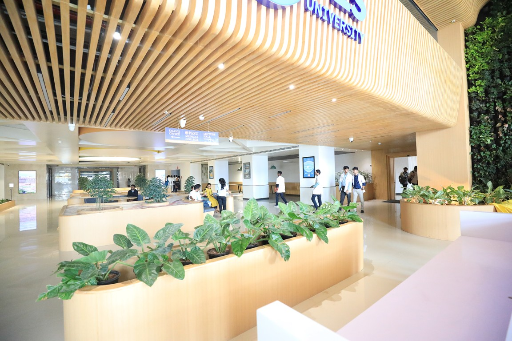

5.5 years to becoming a doctor.
A UGC- and NMC-approved MBBS at PES University's Electronic City campus, anchored by a 1000-bed teaching hospital.

A 1000-bed hospital, built into the campus.
From simulation labs to live clinical postings, backed by a 650-bed specialty and super-specialty hospital.

Pioneering medical education since 2001.
Built on the legacy of PES Institute of Medical Sciences & Research, Kuppam — now expanded to Bengaluru's Electronic City campus.
Get In Touch
Have questions about MBBS admissions?
Share a few details and our admissions counsellors will walk you through eligibility, fees, scholarships and the application timeline — no obligation.
- Fast Response — a counsellor calls back within 24 hours.
- One-on-One Guidance — personalised help with NEET eligibility and documentation.
- No Obligation — ask questions before you decide to apply.
Fill this in and we'll reach out shortly.
Why PES University
Key differentiators of the programme
Six deliberate choices behind the curriculum, the campus and the hospital it's built around.
Academic Excellence
A strong academic reputation built on a comprehensive curriculum and an experienced faculty body.
State-of-the-Art Infrastructure
Modern facilities, laboratories and equipment designed for a conducive learning environment.
Research Opportunities
Dedicated labs and funding for student projects, enabling innovative and cutting-edge medical research.
Clinical Exposure
A 650-bed specialty and super-specialty hospital gives students hands-on experience from early on.
Student Support Services
Counselling, career guidance and extracurricular activities that support all-round student development.
AI in Curriculum & Care
Artificial intelligence integrated into both curriculum delivery and patient care on campus.
Overview
A UGC- and NMC-approved MBBS, backed by a working hospital
PES University has been a pioneer in medical education since 2001, when the PES Institute of Medical Sciences & Research (PESIMSR) was established in Kuppam, Andhra Pradesh. Building on that legacy, the PES University Institute of Medical Sciences & Research (PESUIMSR) launched in Bengaluru in 2023, with a 1000-bed hospital built into the Electronic City campus.
Candidates need 50% or more in 10+2 with Physics, Chemistry, Biology and English, along with the 50th percentile or above in NEET. The programme runs 4.5 years of coursework plus a mandatory one-year internship.


"Our programme pairs rigorous foundational science with clinical exposure from the earliest terms — case-based learning, simulation and a teaching hospital on campus, so students are working alongside patients long before their internship year."PES University Institute of Medical Sciences & Research
Programme Design
From lecture theatre to hospital ward
The curriculum moves in two broad stages — foundational science first, then clinical training and a mandatory internship.

Pre-Clinical & Para-Clinical Foundation
Anatomy, Physiology and Biochemistry lay the groundwork for the human body, followed by Pathology, Microbiology and Pharmacology — how disease begins, progresses and is treated.

Clinical Training & Internship
Rotations through General Medicine, Surgery, OBG, Paediatrics, Orthopaedics, Ophthalmology and ENT, under the supervision of experienced physicians, before a full year of internship.
Semester-Wise Structure
Four phases, one internship year
The MBBS follows the Competency-Based Medical Education (CBME) framework, phase by phase.
Pre-Clinical Phase
Foundational sciences that lay the groundwork for understanding the human body and its functions.
Para-Clinical Phase
Understanding how disease begins, progresses, is diagnosed and treated.
Clinical Phase
Rotations through hospital departments and specialties, under supervision of experienced physicians.
Internship
A mandatory rotating internship across departments, completing the path to registration as a doctor.
*Semester and phase windows are tentative and subject to change per academic-calendar norms.
Who Should Pursue This
Built for future doctors, not just future graduates
Students who are passionate about healthcare and have a strong desire to serve the community should consider MBBS at PESUIMSR — a programme suited to those who are dedicated, compassionate and genuinely curious about scientific and medical knowledge.
What It Takes
- Willingness to Work Hard — resilience and problem-solving under sustained academic pressure.
- Compassion — a genuine desire to serve patients and the wider community.
- Scientific Curiosity — interest in the science behind diagnosis and treatment.
- Commitment to Lifelong Learning — medicine keeps changing; so must the doctor.
- Composure Under Pressure — the ability to stay level-headed in high-stakes situations.
- A Long-Term View — readiness for a challenging, multi-year path to practice.
Pedagogy Methods
How the classroom becomes the clinic
From problem-based learning to simulated patients, before students ever see the ward.
Problem-Based Learning
Real-world medical problems build critical thinking and problem-solving skills.
Small Group Teaching
Tutorials and seminars that allow personalised attention and peer learning.
Simulation & Skills Labs
Clinical skills training with simulated patients, in a controlled environment.
Integrated Teaching
Collaboration across departments for a holistic understanding of each topic.
AETCOM Module
Attitude, ethics and communication, woven through the curriculum from year one.
Family Adoption Programme
Village outreach that grounds Community Medicine in real households.
Self-Directed Learning
Students take ownership of their own research and study habits.
Technology-Enhanced Learning
Digital libraries, virtual learning environments and AI-enabled tools.
Careers
Where an MBBS from PESU can take you
A dedicated placement cell, career counselling and an alumni network support every graduate's next step.
Collaborations & Legacy
Partnerships that widen the training
PESIMSR, Kuppam
The founding medical college of 2001, serving Rayalaseema and bordering Tamil Nadu and Karnataka.
S-VYASA MOU
A partnership for collaborative student training and research.
AI Integration
Artificial intelligence in curriculum delivery and patient care, campus-wide.
Outreach & FAP
Regular health camps and the Family Adoption Programme for underprivileged communities.
Financial Support
Merit scholarships, awarded on performance
Over ₹140 crores in merit scholarships have been given to PES University students since 2014. Two tuition-refund scholarships apply to the MBBS batch, stacked by rank.
Merit Scholarships
Awarded on CGPA / SGPAProf. MRD Merit Scholarship
Merit certificate + 50% tuition fee refund for the top 5% of students, every year, based on CGPA. In an MBBS batch of 250, that's roughly the top 13 students.
Dr. B. C. Roy Merit Scholarship
Merit certificate + 40% tuition fee refund for students ranked above the top 5% up to the top 25%, every semester, based on SGPA. In an MBBS batch of 250, that's roughly the next 50 students.
PES Loyalty Program
Awarded on family / institutional ties, every year of studyPES Employees
Children of full-time staff, 5+ years employment.
PES Institution Students
Graduates of any PES institution or sister concern.
Siblings of Students
Siblings of currently enrolled PES students.
Alumni Family
Siblings and children of PES University alumni.
Subject to qualifying CGPA / SGPA and Scholarship Committee conditions each year · Not applicable in the final year of study · One award per student per semester / year · Batch figures for merit scholarships are illustrative for an MBBS cohort of 250 · Refer www.pes.edu for regular updates.
University Highlights
Recognition beyond the medical programme
The accreditations and rankings behind PES University as a whole.
University in Karnataka
Among new universities under 5 years, ranked by KSURF.
NAAC Accredited
PES University holds NAAC's top-grade accreditation nationally.
B-School in Karnataka
Times of India B-School Rankings, 2021.
Most Preferred B-School
Second only to IIM Bangalore among B-School aspirants, per Times of India.
Admissions 2026 Open
Your white coat is 5.5 years away.
4.5 years of training, a year of internship, and a 1000-bed hospital that's already part of your classroom.